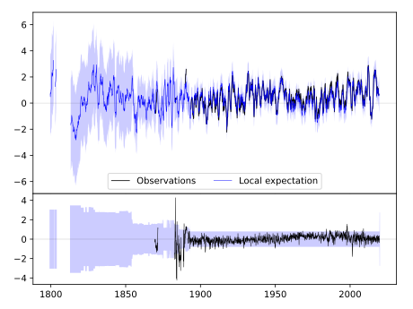
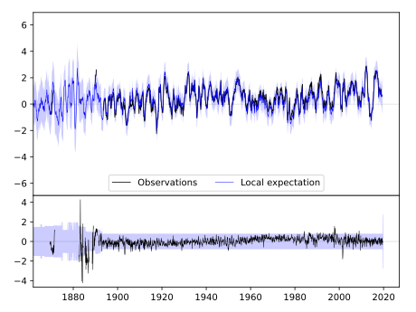
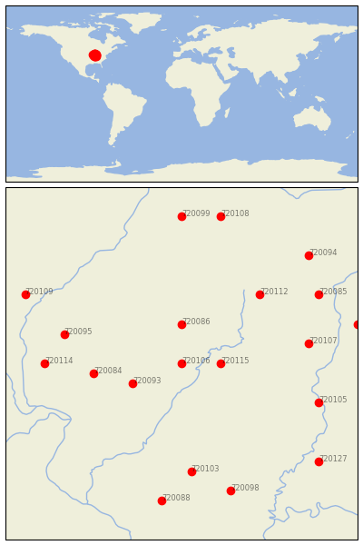

PANA 3E [USA]


| Neighbour | Name | Country | Distance | Lon/Lat | Years |
|---|
| 720106 | PANA 3E | USA | 0 | -89.0, 39.4 | 1869-2019 |
| 720115 | WINDSOR | USA | 34 | -88.6, 39.4 | 1885-2019 |
| 720086 | DECATUR WTP | USA | 44 | -89.0, 39.8 | 1875-2019 |
| 720093 | HILLSBORO | USA | 48 | -89.5, 39.2 | 1893-2019 |
| 720084 | CARLINVILLE | USA | 78 | -89.9, 39.3 | 1891-2019 |
| 720112 | URBANA | USA | 103 | -88.2, 40.1 | 1888-2019 |
| 720095 | JACKSONVILLE 2E | USA | 108 | -90.2, 39.7 | 1858-2019 |
| 720107 | PARIS WTR WKS | USA | 113 | -87.7, 39.6 | 1886-2019 |
| 720114 | WHITE HALL 1 E | USA | 120 | -90.4, 39.4 | 1854-2019 |
| 720103 | MT VERNON 3 NE | USA | 122 | -88.9, 38.3 | 1879-2019 |
| 720105 | PALESTINE | USA | 128 | -87.6, 39.0 | 1882-2019 |
| 720085 | DANVILLE | USA | 142 | -87.6, 40.1 | 1893-2019 |
| 720098 | MCLEANSBORO | USA | 150 | -88.5, 38.1 | 1882-2019 |
| 720088 | DU QUOIN 4 SE | USA | 156 | -89.2, 38.0 | 1886-2019 |
| 720109 | RUSHVILLE | USA | 157 | -90.6, 40.1 | 1889-2019 |
| 720129 | ROCKVILLE | USA | 160 | -87.2, 39.8 | 1862-2019 |
| 720127 | PRINCETON 1 W | USA | 164 | -87.6, 38.4 | 1884-2019 |
| 720094 | HOOPESTON 1 NE | USA | 165 | -87.7, 40.5 | 1887-2019 |
| 720099 | MINONK | USA | 166 | -89.0, 40.9 | 1886-2019 |
| 720108 | PONTIAC | USA | 170 | -88.6, 40.9 | 1886-2019 |